09 / Circular product & service design
The Flipper
A recycling-centre concept for Avalex that makes heavy waste easier to dispose of and turns each visit into an opportunity to learn about its impact.
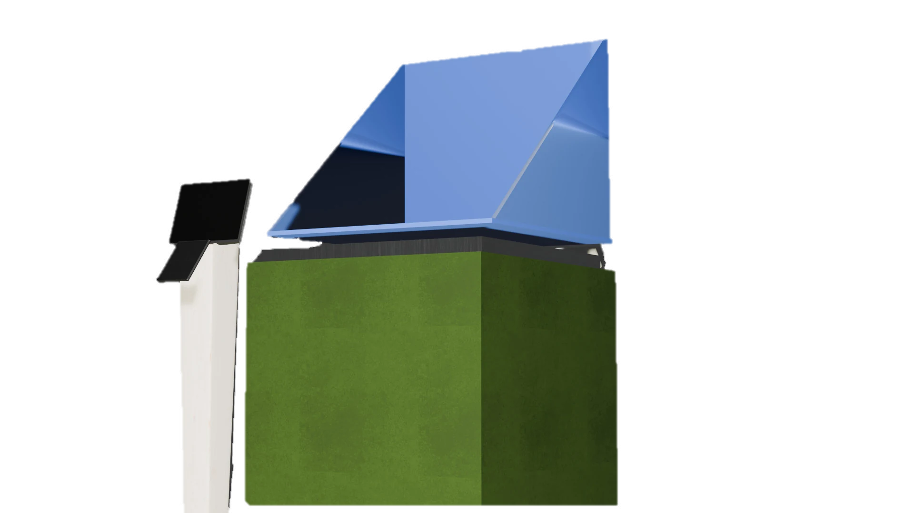
Make waste separation easier to understand and do
Avalex aims to create a clean, circular living environment and reduce residual waste. The brief was to improve the appearance, usability and educational value of its recycling centres without losing sight of the limits of existing sites. Research pointed to four recurring barriers: people are unsure how to separate materials, want the visit to be quick, cannot always see the impact of their choices and may find lifting heavy waste physically demanding.
The concept responds with a product and a service. At the centre, the Flipper weighs and disposes of selected materials while showing immediate feedback. After the visit, an optional digital service could explain how materials are processed and show estimated emissions savings and potential Diftar benefits. The concept drivers below translate those frustrations into design actions.
The brief also set practical criteria: a compact footprint, low effort for visitors, accessible and understandable interaction, safe operation, straightforward cleaning and maintenance, a calibratable scale, meaningful feedback and a target budget below €50,000. The budget was a design constraint, not a validated installation cost.
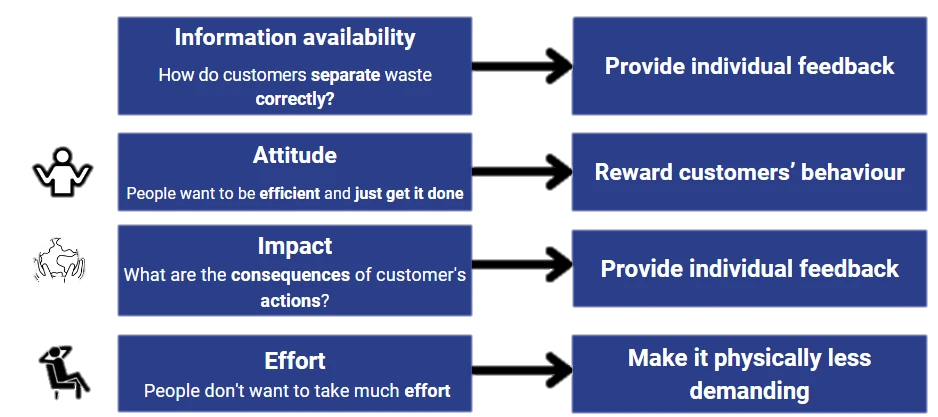
A service shaped around its stakeholders
The project considers visitors, Avalex employees and the municipality. Visitors could receive clearer information and feedback; Avalex could gain better-organised data and cleaner material streams, with less need for staff to guide every disposal; municipalities could gain insight into separated waste. The proposed feedback loop connects the station to a database and website, so information can return to visitors after they leave.
The behavioural aim is to make the result of a disposal more visible and strengthen visitors’ confidence that their actions matter. Direct feedback at the station is paired with learning and rewards afterwards. These are intended effects, not outcomes demonstrated by a live installation.
Interviews explored which feedback and incentives visitors would value. Many wanted to understand saved emissions, what happens to collected material and whether correct separation could reduce their waste tax. A consultation about IT and data-protection requirements also shaped the interaction: people need clear information and a genuine choice before household data is registered.
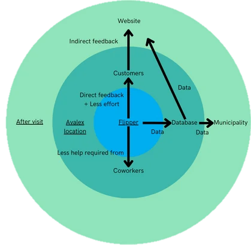
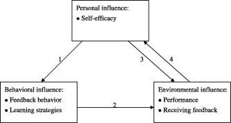
A fixed station beside the container
The Flipper was designed to sit beside the standing platform at an Avalex site, just before the container fence. Its green aluminium enclosure connects to a closed container; a blue, triangular weighing surface rotates to tip waste into it. A shutter, motor, supporting frame, touchscreen and NFC reader complete the station. The user-facing platform is 63 cm high, based on the ergonomic evaluation.
The layout study places the unit within the existing circulation route. The design would need a suitable power supply for the motor, shutter and interface, and each station would be assigned to a material stream so its weight and impact calculations remain meaningful.
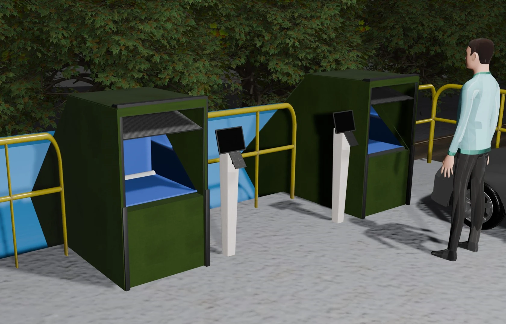
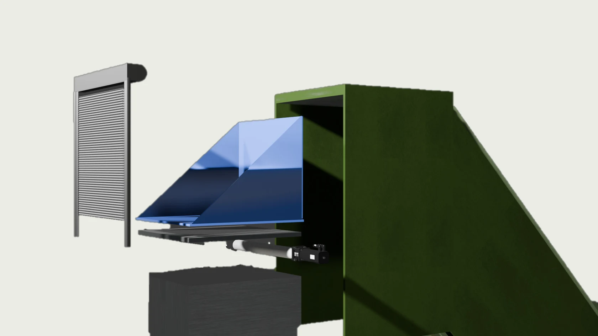
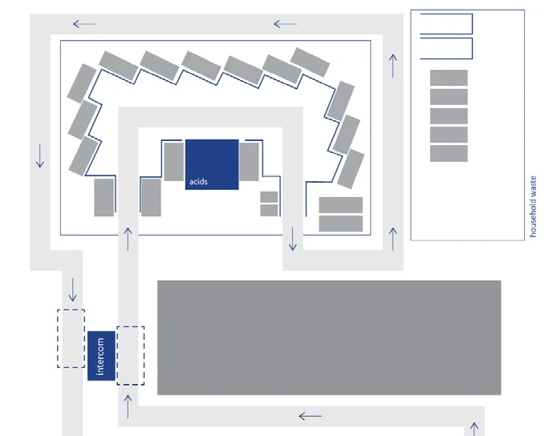
Weigh, choose and dispose
Visitors bring the selected material to the correct station and place it on the open platform. They can then scan an Avalex pass to register the weight or choose the unregistered option. A shutter closes before the platform rotates and tips the waste into the closed container. The interface shows the weight and an estimate of saved emissions; registered data can be linked to a household account.
Registration is optional. The report recommends explaining data use before collection and offering an unregistered route for people who do not consent. The Avalex pass could use NFC; the report favours it because a tap is quick, requires no direct line of sight and uses little power. Protecting household-linked data would be essential.
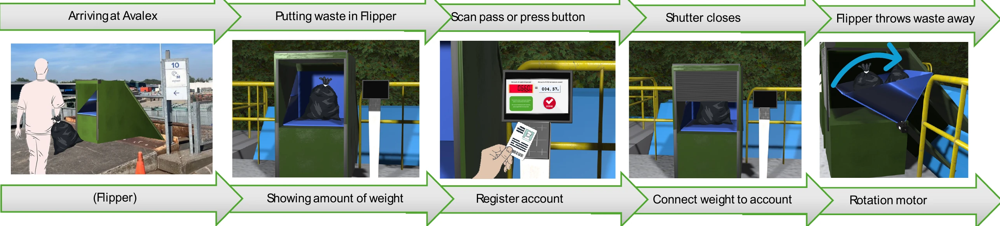
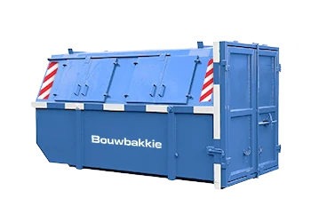
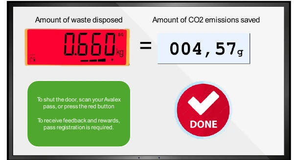
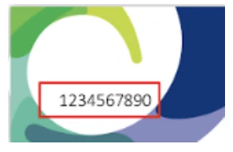
Turn data into useful guidance
The proposed website extends the interaction beyond the recycling centre. It could help visitors identify the right material stream, explain how to separate and recycle waste at home, and show what happens after collection. A personal overview could also display estimated emissions savings and, where connected to Diftar, potential household savings. The mock-ups illustrate a service proposal; they were not a deployed website or validated reward system.
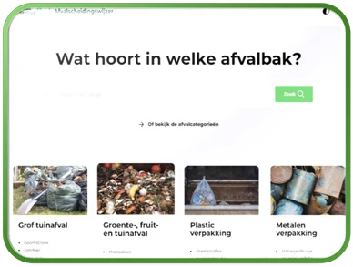
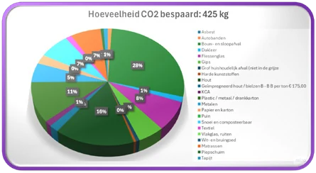
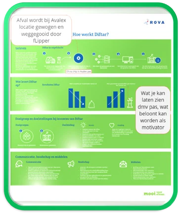
Lower the effort of handling heavy waste
DINED population data informed the comparison between a 63 cm hand-height platform and an 88 cm elbow-height platform. The study aimed to represent visitors aged 20–94 and make the platform accessible across a broad range of body sizes. In 74.07% of the tested actions, participants preferred 63 cm; for a 15 kg load, that rose to 77.78%. The lower platform was therefore selected to reduce the need to lift heavy objects above a fence.
This result comes from a simulated evaluation, not long-term use at an Avalex centre. The interface height was considered separately and set at 88 cm. The report also notes that the interface had not yet been tested with visitors, so its instructions and accessibility would need evaluation in a pilot.
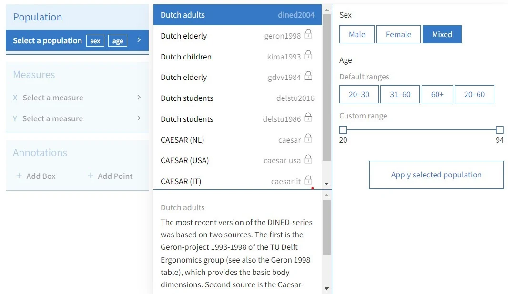
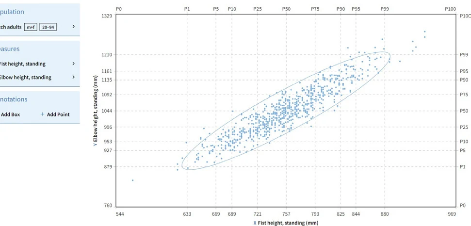
Rotate the load instead of lifting it
Early concepts included a conveyor and a container scale. After reviewing the alternatives with the client and coach, I developed a fixed Flipper: it uses less floor space than a conveyor, avoids a surface that is difficult to clean and reduces the risk of waste rolling back towards a visitor. Two mechanisms were then compared: a lifting table that raises one side of a platform, and the hollow triangular Flipper that first rotates the waste by 90 degrees. A plywood prototype with an aluminium surface was tested with wood, metal and cardboard at 5, 10 and 15 kg. In the test, the Flipper needed a smaller additional angle for the waste to slide into the container. Its shape also helps contain objects during tipping. Because the prototype surface was not the proposed stainless steel, performance with final materials still needs testing.
The weighing platform is described as two stainless-steel sheets with nine compression sensors between them. Their readings are averaged, and the scale recalibrates when the Flipper returns to its starting position. The report proposes a robust stainless-steel support table and an enclosed sensor assembly to keep the platform stable and easier to maintain.
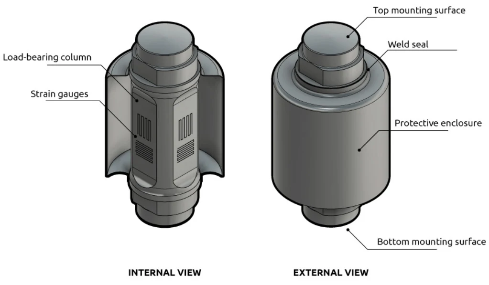
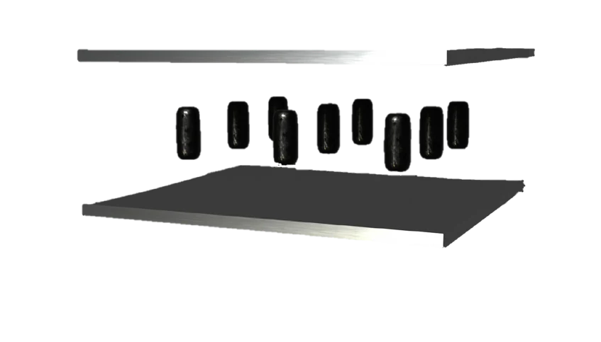
Prototype the service before scaling up
The report’s itemised component estimate totals €4,805 per unit, while its cost-summary text gives a different figure of €3,280. Both figures exclude some manufacturing, shipping, installation and site-adaptation costs. A later rough scenario estimates around €11,500 per installed unit before location-specific construction work; electricity, road changes and NFC access for a large pass base could add substantially. These are early estimates rather than a procurement quote.
Potential benefits include cleaner material streams, less staff assistance and better information for visitors, Avalex and municipalities. They depend on people using the station and responding to its feedback. My recommendation is to pilot four stations for selected materials, test the interface and consent flow with visitors, measure sorting quality and operating costs, and verify the business case before wider installation. The prototype and interface were not validated as a complete working system, and the concept should not be presented as an implemented service.
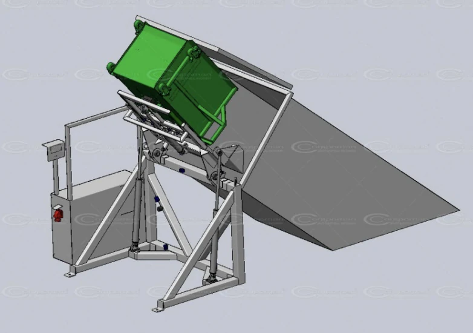
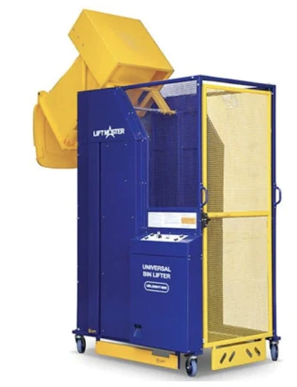
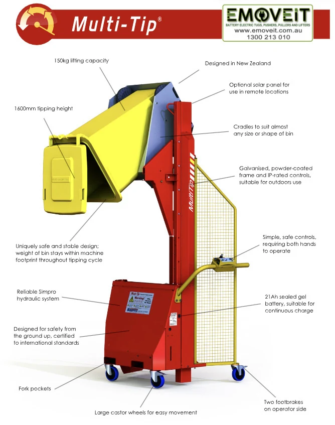
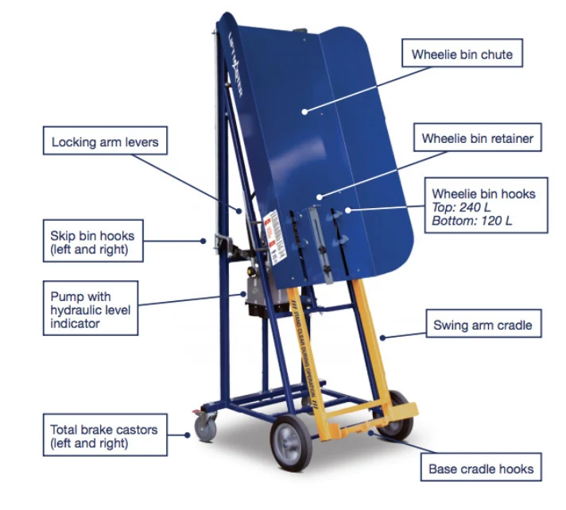
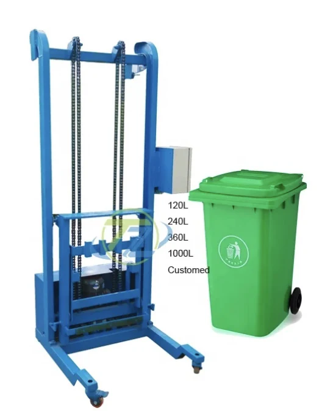
The Flipper is an academic concept developed for Avalex. Its behaviour-change effects, complete interface, measurement accuracy and site costs require real-world validation.
Next projectThe Epilepsy Journal